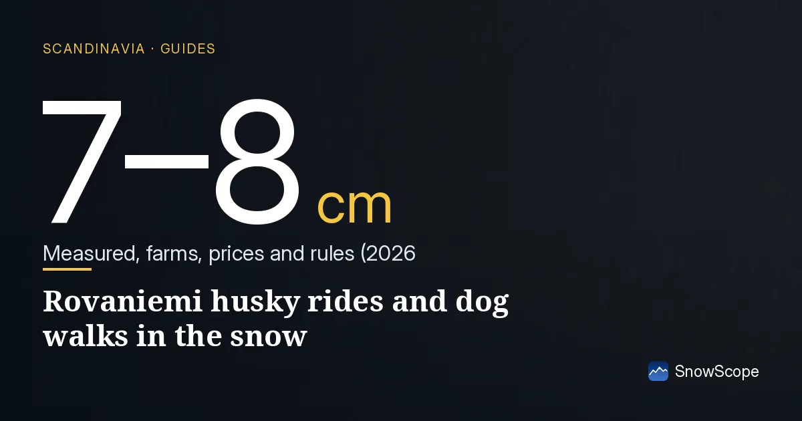

Huskyturer och hundpromenader i Rovaniemi: 7 till 8 cm uppmätt, gårdar, priser och regler (2026)
Rovaniemi har fått sin första riktiga snö. På morgonen den 13 november mätte väderstationen vid flygplatsen, på 186 m, 7 cm, och den i Apukka öster om stan 8 cm. En vecka tidigare visade båda stationerna barmark. Staden öppnade samma dag sitt förstasnöspår för skidor, 450 m långt, och säger att fler spår kommer. För huskygårdarna betyder det att bytet från vagnar till slädar är nära.
Se snöprognosen för Rovaniemi live i SnowScope-appenSnödjup, pudervarningar och 3D-kartan, gratis.

Tre gårdar med tydliga datum och priser
Visit Rovaniemi listar ett dussin huskyföretag. Tre av dem har tydliga datum och priser på sina egna sidor:
Bearhill Husky kör turer där du styr själv på snö från 30 november 2026 till 4 april 2027; familjeturen innehåller ungefär 45 minuter där du kör ditt eget spann på ungefär 6 till 10 km, från 196 EUR. Raitola, en ren- och huskygård, kör en huskysafari på 5 km på ungefär en timme, från december till mitten av april, för 144 EUR per vuxen. Arctic Circle Husky Park har ett kort besök med en tur på 1 km, för 75 EUR per vuxen.
Före snösäsongen erbjuder flera gårdar vagnsturer eller kortare 'musher'-turer där en guide kör. Fråga vad det är du bokar.
Dagsljus i slutet av november
Rovaniemi ligger på polcirkeln, så dagarna krymper snabbt: ungefär 5 timmar och 43 minuter dagsljus den 15 november, under 4 timmar den 30 november. Solen går fortfarande upp i stan i december, en kort stund. Boka turer mitt på dagen om du vill se landskapet.
Gå ut med din egen hund i snön
Allemansrätten i Finland är generös, med tydliga gränser för hundar. Hundar är inte tillåtna i preparerade skidspår, och Forststyrelsen, som förvaltar statens skogar, ber även fotgängare att hålla sig borta från spåren. I tättbebyggda områden ska hunden vara kopplad året runt; på andra ställen gäller kopplingsregeln från 1 mars till 19 augusti. I nationalparker och andra skyddade områden ska hunden alltid vara kopplad.
Rovaniemi är renland: det är förbjudet att närma sig renar med hund, även för ett foto. Staden har två inhägnade hundrastgårdar, en upplyst i Lainaanpuisto och en i skogen vid Ounasrinne, där hundar får springa fritt. En del av stadens motionsspår är upplysta, vilket hjälper under de korta dagarna, men lämna spåret åt skidåkarna.
Tips för skidåkare
- Snön är tunn i början av säsongen: gårdarna kan fortfarande använda vagnar vissa dagar i slutet av november. Kontrollera upplägget när du bokar.
- Med din egen hund är de inhägnade rastgårdarna det säkraste stället att låta den springa medan renarna finns nära vägarna.
- Klä din hund för kylan också: korthåriga hundar känner minusgraderna och saltet på tassarna på stadens gator.
Referenser och källor
- Meteorologiska institutet (Finland), öppna data (CC BY 4.0) en.ilmatieteenlaitos.fi/open-data
- Visit Rovaniemi, huskyturer med släde och gårdsbesök (officiell turistorganisation) www.visitrovaniemi.fi/see-do/activities/husky-sled-rides-farm-visits/
- Bearhill Husky, turer där du kör själv bearhillhusky.com/winter-tours/self-driven-tours/
- Raitola, huskysafari på 5 km raitola.fi/husky-safaris/5km-husky-safari/
- Arctic Circle Husky Park, besök och tur på 1 km huskypark.fi/activities/current-activities/visiting-package-and-a-thrilling-ride-1-km/
- Rovaniemi stad, vintersportplatser öppna, förstasnöspår för skidor (nyhet, 13 nov 2026) www.rovaniemi.fi/news/Talviliikuntapaikkoja-aletaan-avata-Rovaniemella-rinteet-ja-ensilumenlatu-auki,-luistelukenttia-jaadytetaan-/34981/16dd2bdf-0f50-4830-a793-9d9c2d28b425
- timeanddate, soluppgång och solnedgång i Rovaniemi, november 2026 www.timeanddate.com/sun/finland/rovaniemi?month=11&year=2026
- Forststyrelsen luontoon.fi, allemansrätten www.luontoon.fi/en/activities/hiking-and-outdoor-recreation/everymans-rights
- Forststyrelsen luontoon.fi, vandra med hund www.luontoon.fi/en/activities/hiking-and-outdoor-recreation/tips/visitor-guidelines/hiking-with-a-dog
- Rovaniemi stad, hundrastgårdar www.rovaniemi.fi/Palvelut/Koira-aitaukset-ja-koirankakkapussiautomaatit/dee5c225-cbce-4d90-81f7-3d4495503dd3
Om siffrorna
Snö: morgonavläsningar den 13 november 2026 vid de officiella väderstationerna i Sverige (SMHI), Finland (FMI) och Norge (MET Norways stationsrapporter, CC BY 4.0, publicerade av Ogimet); för de norska fjällsluttningarna Norges nationella snökarta seNorge (NVE och MET Norway, NLOD), en uppskattning. Arrangörer: de som listas av den officiella turistorganisationen, med datum, längd och priser lästa på arrangörernas egna sidor den 13 november 2026; priser ändras, kontrollera innan du bokar. Regler: nationella lagar och kommunala regler, länkade nedan.
Citera den här rapporten
För forskning, undervisning eller press: siffrorna och diagrammen får återanvändas fritt under CC BY 4.0 med den här källhänvisningen.
SnowScope (2026), Huskyturer och hundpromenader i Rovaniemi: 7 till 8 cm uppmätt, gårdar, priser och regler (2026), https://snowscope.app/blog/sv/2026/11/rovaniemi-husky-rides-dog-walks-snow-guide-2026.html, hämtad 2026-11-14
SnowScope (Atlas Labs). (2026, November 14). Huskyturer och hundpromenader i Rovaniemi: 7 till 8 cm uppmätt, gårdar, priser och regler (2026). SnowScope snow reports. https://snowscope.app/blog/sv/2026/11/rovaniemi-husky-rides-dog-walks-snow-guide-2026.html
BibTeX
@misc{snowscope2026rovaniemihuskyridesdogwa,
author = {{SnowScope (Atlas Labs)}},
title = {Huskyturer och hundpromenader i Rovaniemi: 7 till 8 cm uppmätt, gårdar, priser och regler (2026)},
year = {2026},
month = nov,
howpublished = {\url{https://snowscope.app/blog/sv/2026/11/rovaniemi-husky-rides-dog-walks-snow-guide-2026.html}},
note = {Published 2026-11-14 19:39 UTC; accessed 2026-11-14}
}· CC BY 4.0 · Metoder, data och verktyg →
Följ Rovaniemi
Gratis: ett meddelande när nysnö är på väg, och prognosen varje morgon.